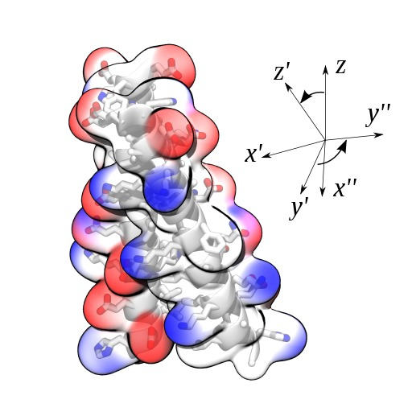

Collective Variables Module Reference manual for VMD Alejandro Bernardin, Haochuan Chen, Jeffrey R. Comer, Giacomo Fiorin, Haohao Fu, Jérôme Hénin, Axel Kohlmeyer, Fabrizio Marinelli, Hubert Santuz, Joshua V. Vermaas, Andrew D. White, Wei Zhang (Code version: 2026-11-24)  Updated versions of this manual: [GROMACS] [LAMMPS] [NAMD] [Tinker-HP] [VMD] (PDF version) Contents 1 Overview 2 Writing a Colvars configuration: a crash course 3 The Colvars dashboard 3.1 A mini-tutorial 3.2 The Dashboard window 3.3 Loading / Saving configuration files 3.4 Automatic colvar generators 3.5 The configuration editor 3.6 Plotting and visualizing collective variables Timeline plots Pairwise scatterplots Histogram 3.7 Monitoring colvar biases in the Dashboard 3.8 Plotting custom time-dependent quantities as colvars 4 Enabling and controlling the Colvars module in VMD 4.1 Units in the Colvars module 4.2 Using the scripting interface to control the Colvars module 4.2.1 Setting up the Colvars module 4.2.2 Using the Colvars version in scripts 4.2.3 Loading and saving the Colvars state and other information 4.2.4 Accessing atomic data 4.2.5 Analyzing a trajectory in VMD 4.2.6 Managing collective variables 4.2.7 Applying and analyzing forces on collective variables 4.2.8 Managing collective variable biases 4.2.9 Loading and saving the state of individual biases 4.3 Configuration syntax used by the Colvars module 4.4 Global keywords 4.5 Input state file 4.5.1 Changing configuration upon restarting. 4.6 Output files 4.7 File formats 4.7.1 Configuration and state files. 4.7.2 Index (NDX) files 4.7.3 XYZ coordinate files 4.7.4 PDB coordinate files 4.7.5 Grid files: multicolumn text format 4.7.6 Output trajectory files 5 Defining collective variables 5.1 Choosing a function 5.2 Treatment of periodic boundary conditions 5.3 Distances 5.3.1 distance: center-of-mass distance between two groups. 5.3.2 distanceZ: projection of a distance vector on an axis. 5.3.3 distanceXY: modulus of the projection of a distance vector on a plane. 5.3.4 distanceVec: distance vector between two groups. 5.3.5 distanceDir: distance unit vector between two groups. 5.3.6 distanceInv: mean distance between two groups of atoms. 5.4 Angles 5.4.1 angle: angle between three groups. 5.4.2 dipoleAngle: angle between two groups and dipole of a third group. 5.4.3 dihedral: torsional angle between four groups. 5.4.4 polarTheta: polar angle in spherical coordinates. 5.4.5 polarPhi: azimuthal angle in spherical coordinates. 5.5 Contacts 5.5.1 coordNum: coordination number between two groups. 5.5.2 groupCoord: coordination number between two groups. 5.5.3 selfCoordNum: coordination number between atoms within a group. 5.5.4 hBond: hydrogen bond between two atoms. 5.6 Collective metrics 5.6.1 rmsd: root mean square displacement (RMSD) from reference positions. 5.6.2 Advanced usage of the rmsd component. 5.6.3 eigenvector: projection of the atomic coordinates on a vector. 5.6.4 gyration: radius of gyration of a group of atoms. 5.6.5 inertia: total moment of inertia of a group of atoms. 5.6.6 dipoleMagnitude: dipole magnitude of a group of atoms. 5.6.7 inertiaZ: total moment of inertia of a group of atoms around a chosen axis. 5.7 Rotations 5.7.1 orientation: orientation from reference coordinates. 5.7.2 orientationAngle: angle of rotation from reference coordinates. 5.7.3 orientationProj: cosine of the angle of rotation from reference coordinates. 5.7.4 spinAngle: angle of rotation around a given axis. 5.7.5 tilt: cosine of the rotation orthogonal to a given axis. 5.7.6 eulerPhi: Roll angle from references coordinates. 5.7.7 eulerTheta: Pitch angle from references coordinates. 5.7.8 eulerPsi: Yaw angle from references coordinates. 5.8 Protein structure descriptors 5.8.1 alpha: α-helix content of a protein segment. 5.8.2 dihedralPC: protein dihedral principal component 5.9 Raw data: building blocks for custom functions 5.9.1 cartesian: vector of atomic Cartesian coordinates. 5.9.2 distancePairs: set of pairwise distances between two groups. 5.10 Geometric path collective variables 5.10.1 gspath: progress along a path defined in atomic Cartesian coordinate space. 5.10.2 gzpath: distance from a path defined in atomic Cartesian coordinate space. 5.10.3 linearCombination: Helper CV to define a linear combination of other CVs 5.10.4 customColvar: Helper CV to define a mathematical expression as CV from other CVs 5.10.5 gspathCV: progress along a path defined in CV space. 5.10.6 gzpathCV: distance from a path defined in CV space. 5.11 Arithmetic path collective variables 5.11.1 aspathCV: progress along a path defined in CV space. 5.11.2 azpathCV: distance from a path defined in CV space. 5.11.3 Path collective variables in Cartesian coordinates 5.11.4 aspath: progress along a path defined in atomic Cartesian coordinate space. 5.11.5 azpath: distance from a path defined in atomic Cartesian coordinate space. 5.12 Dense neural network in CV space (MLCV) 5.13 Torch-based collective variables 5.14 Volumetric map-based variables 5.14.1 mapTotal: total value of a volumetric map 5.14.2 Multi-Map collective variables 5.15 Shared keywords for all components 5.16 Periodic components 5.17 Non-scalar components 5.17.1 Calculating total forces 5.18 Linear and polynomial combinations of components 5.19 Custom functions 5.20 Scripted functions 5.21 Defining grid parameters for a colvar 5.22 Trajectory output 5.23 Extended Lagrangian 5.24 Multiple time-step variables 5.25 Backward-compatibility 5.26 Statistical analysis 6 Selecting atoms 6.1 Atom selection keywords 6.2 Moving frame of reference. 6.2.1 Note on fit gradients 6.3 Treatment of periodic boundary conditions. 6.4 Performance of a Colvars calculation based on group size. 7 Biasing and analysis methods 7.1 Defining grids for biasing and analysis methods 7.2 Thermodynamic integration 7.3 Adaptive Biasing Force 7.3.1 ABF requirements on collective variables 7.3.2 Parameters for ABF 7.3.3 Multiple-walker ABF Output files of multiple-walker ABF. 7.3.4 Output files 7.3.5 Multidimensional free energy surfaces 7.4 Extended-system Adaptive Biasing Force (eABF) 7.4.1 CZAR estimator of the free energy 7.5 Adiabatic Bias Molecular Dynamics (ABMD) 7.6 Metadynamics 7.6.1 Treatment of the PMF boundaries 7.6.2 Required metadynamics keywords 7.6.3 Output files 7.6.4 Performance optimization 7.6.5 Ensemble-Biased Metadynamics 7.6.6 Well-tempered metadynamics 7.6.7 Multiple-walker metadynamics 7.7 On-the-fly probability enhanced sampling (OPES) 7.7.1 Implementation notes 7.7.2 General options 7.7.3 Multiple-walker options 7.7.4 Output options 7.7.5 Example input 7.8 Harmonic restraints 7.8.1 Moving restraints: steered molecular dynamics 7.8.2 Moving restraints: umbrella sampling 7.8.3 Changing force constant 7.9 Computing the work of a changing restraint 7.10 Harmonic wall restraints 7.11 Linear restraints 7.12 Adaptive Linear Bias/Experiment Directed Simulation 7.13 Multidimensional histograms 7.13.1 Output options for multi-dimensional histograms 7.13.2 Histogramming vector variables 7.14 Probability distribution-restraints 7.15 Defining scripted biases 7.16 Performance of scripted biases 8 Tcl command-line interface: list of commands 8.1 Commands to manage the Colvars module 8.2 Commands to manage individual collective variables 8.3 Commands to manage individual biases 9 Syntax changes from older versions 10 Compilation notes Index References